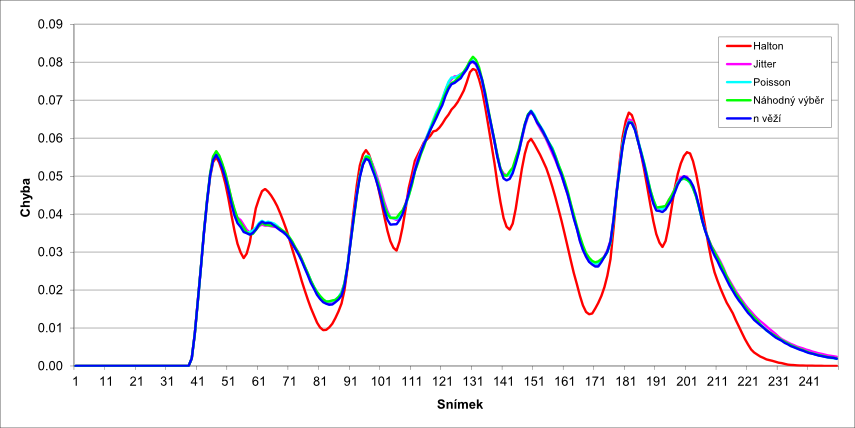
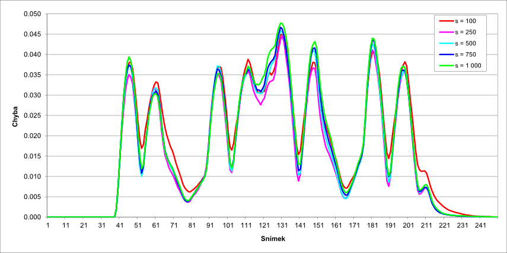
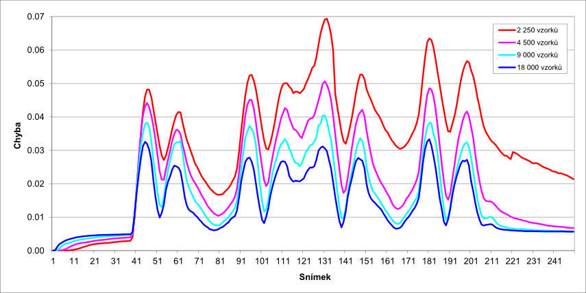
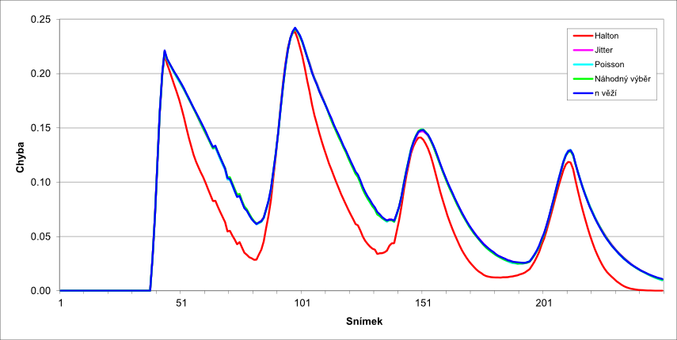
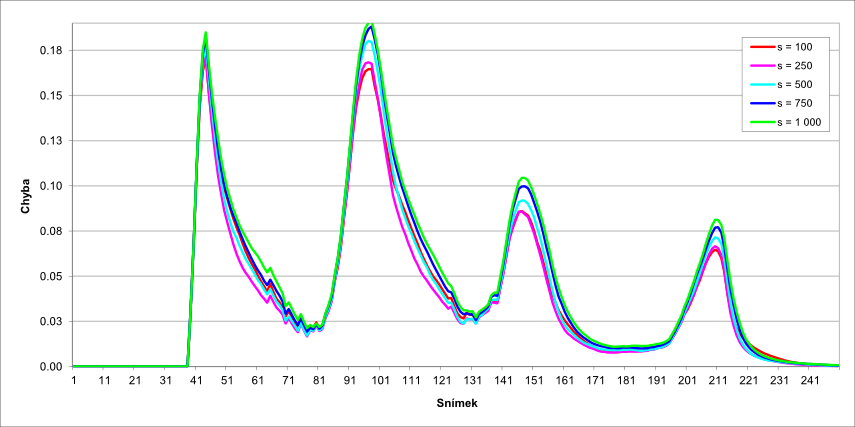
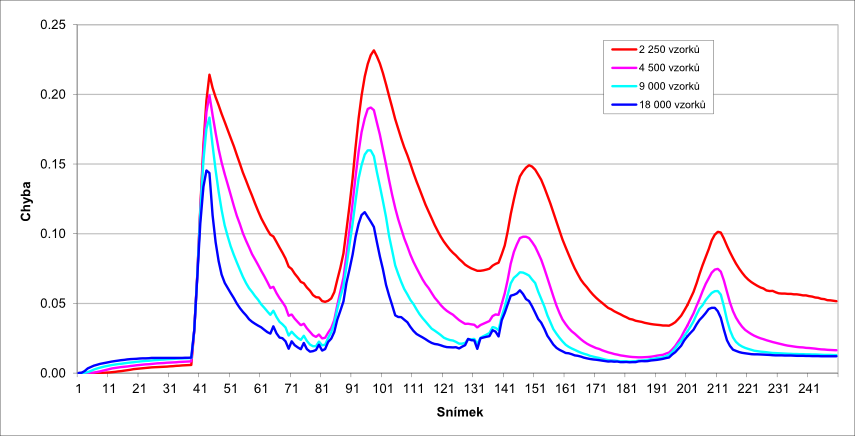
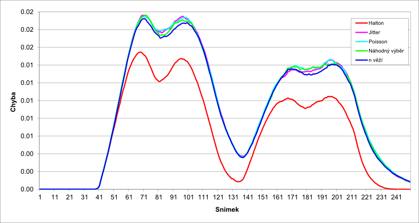
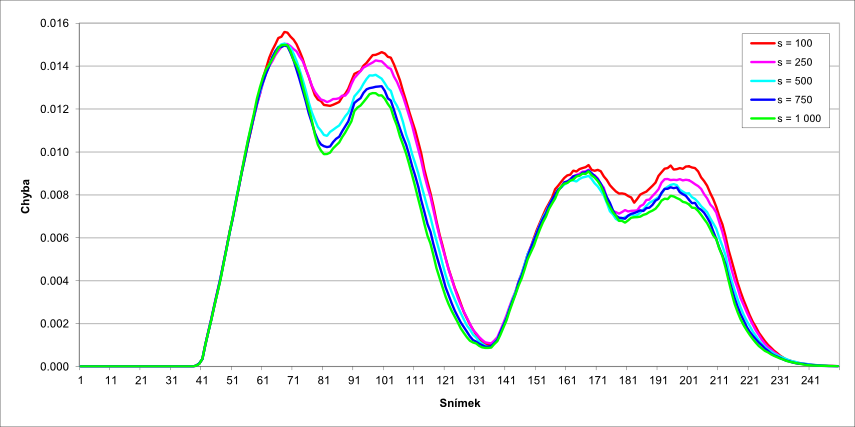
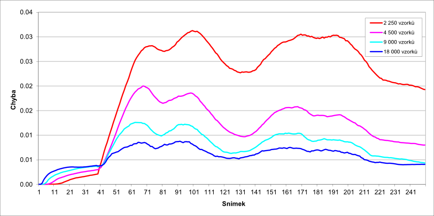

Vizuální vísledky byly pořízeny pro všechny tři testované scény ve dvou časech, konkrétně pro scénu skákající míč v čase @00:00:04.56 (což odpovídá snímku 114) a v čase @00:00:07.48 (snímek 187). Pro scénu Planeta Země v čase @00:00:03.76 (což odpovídá snímku 94) a v čase @00:00:6.25 (což odpovídá snímku 156). A pro scénu Planeta Země pak v čase @00:00:04.16 (což odpovídá snímku 104) a v čase @00:00:07.25 (což odpovídá snímku 182). Jednotlivé vizuální výstupy pro všechny tři části adaptivní bezsnímkové metody jsou dostupné v seznamu níže:









Jednotlivé testy byly prováděny pro všechny možné parametry pro všechny tři testovací scény na všech třech částech adaptivní metody. Nastavení byla následující:
Vyhodnocení testů pro všechny tři scény jsou shrny v následujících tabulkách:
| Náhodný výběr | Haltonova posloupnost | Poissonovy disky | Jittered vzorkování | Problém n věží | |
|---|---|---|---|---|---|
| Skákající míč | 3,321% | 2,973% | 3,315% | 3,322% | 3,281% |
| Planeta Země | 8,425% | 6,415% | 8,424% | 8,441% | 8,469% |
| Šachová figurka | 0,920% | 0,638% | 0,930% | 0,925% | 0,906% |
| 8 × 8 | s = 100 | s = 250 | s = 500 | s = 750 | s = 1 000 |
|---|---|---|---|---|---|
| Skákající míč | 2,566% | 2,275% | 2,217% | 2,225% | 2,236% |
| Planeta Země | 5,169% | 4,601% | 4,617% | 4,833% | 4,989% |
| Šachová figurka | 0,528% | 0,502% | 0,477% | 0,465% | 0,459% |
| 32 × 32 | s = 100 | s = 250 | s = 500 | s = 750 | s = 1 000 |
|---|---|---|---|---|---|
| Skákající míč | 1,707% | 1,494% | 1,563% | 1,603% | 1,649% |
| Planeta Země | 3,911% | 3,679% | 3,977% | 4,333% | 4,552% |
| Šachová figurka | 0,626% | 0,608% | 0,575% | 0,560% | 0,547% |
| 64 × 64 | s = 100 | s = 250 | s = 500 | s = 750 | s = 1 000 |
|---|---|---|---|---|---|
| Skákající míč | 2,113% | 1,657% | 1,667% | 1,713% | 1,749% |
| Planeta Země | 4,873% | 4,395% | 4,647% | 4,933% | 5,126% |
| Šachová figurka | 0,689% | 0,665% | 0,629% | 0,616% | 0,601% |
| 2 250 vzorků | 4 500 vzorků | 9 000 vzorků | 18 000 vzorků | Halton | 32 × 32, s = 250 | |
|---|---|---|---|---|---|---|
| Skákající míč | 3,205% | 2,138% | 1,658% | 1,361% | 2,973% | 1,494% |
| Planeta Země | 8,049% | 5,001% | 3,783% | 2,862% | 6,415% | 3,679% |
| Šachová figurka | 2,127% | 1,133% | 0,758% | 0,583% | 0,638% | 0,608% |